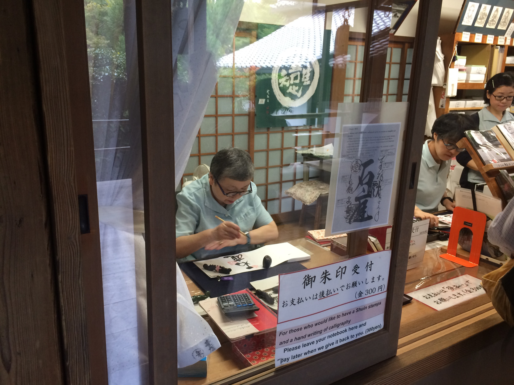
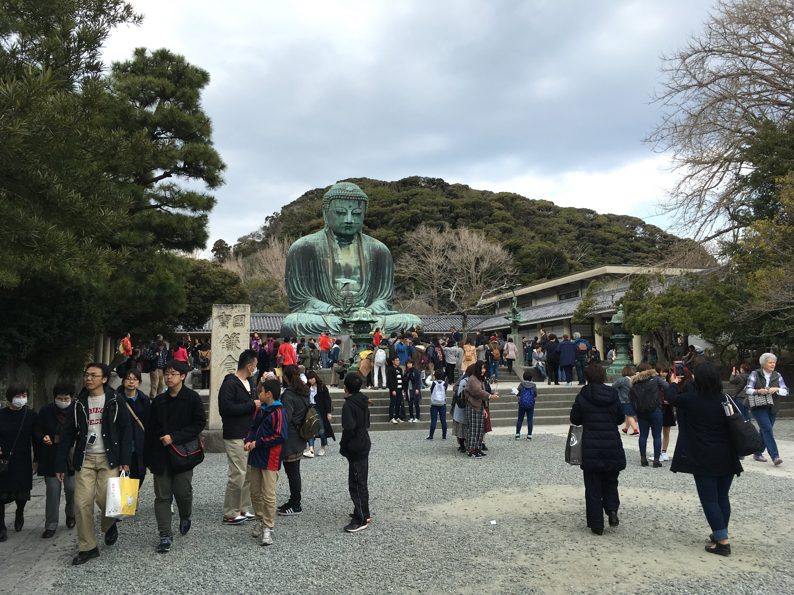
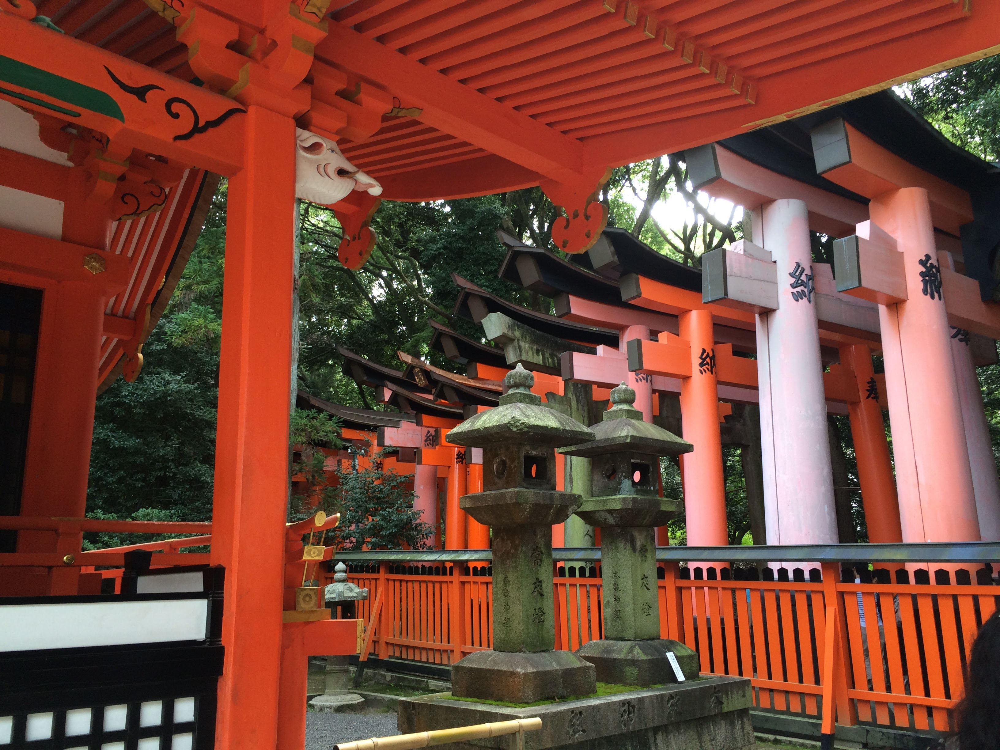
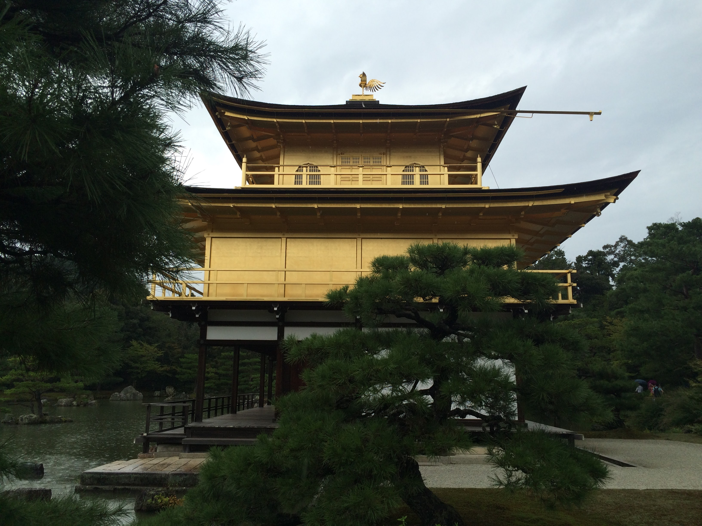

There are many temples and shrines in Japan, and not only are they popular for tourists, they are also important cultural sites.
A temple is associated with Buddhism, and a shrine is associated with Shintoism.
You can visit both temples and shrines while you are in Japan, and they can be found all over the country.
There are some rules of etiquette you should follow when visiting a shrine or temple:
Bow once at the entrance
Wash your hands at the chouzuya
Pay your respects at the main building
Bow once again at the grounds before leaving
The below video is not my own. It was made by Paolo from TOKYO. Paolo will teach you how to visit a shrine!
If you are interested in learning more about etiquette for shrine visits, check out this video from NHK World.
This is from the program #TOKYO, and the episode is 'Keyword: Shrines'. It originally aired on November 16, 2019.
Generally, you can follow the same steps whether you are visiting a shrine or a temple, although there are some slight variations. If you want to know more about the differences, here
is a good article going into some of the steps that might be different depending if you are visiting a temple or a shrine.
If you are respectful and doing your best, nobody will mind if you bow the wrong number of times.
After you purify and pay your respects, you can explore the grounds. Usually you will see a shop where you can buy amulets and fortunes, and sometimes food or other cool souvenirs.

One of my favorite items from my time living in Japan is my Goshuincho. This is a book with accordian style thick, white pages.
Different locations sell books with different designs on the cover, often a picture of the place you are visiting.
When you go to a temple or shrine, you can present your book and for a small fee, have the name and date written in calligraphy on the next blank page.
These books are very fun to fill up by visiting many different temples and shrines, and every seal is slightly different.
At larger sites, you may have to drop your temple book off, and come pick it up after some time has passed.
You can find additional information in this TokyoWeekender article, if you are interested in reading more about Goshuin books and seals.
The below video is not my own. It was made by Tokyo Weekender. It will teach you how to get your shuincho!
Here are some of my favorite temples & shrines!

Kōtoku-in, located in Kamakura.
It is most notable for the Daibutsu, a large bronze statue of Buddha located on the temple grounds. The statue is hollow, and you can go inside.

Fushimi Inari-Taisha, located in Kyoto.
It is most notable for the Senbon Torii, or 1000 red torii gates. The fox is a special animal for the shrine, and you can see many statues of them.
This temple is one of the most famous and most visited in Japan.

Kinkakuji, located in Kyoto.
It is covered in gold leaf, which gives it the beautiful and distinct color that draws visitors. It is a UNESCO World Heritage Site.
Are you interested in visiting temples?
Here are some maps you can download:
{kind=link}
{kind=link}